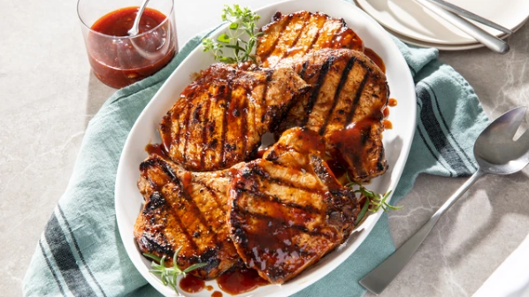

World's Best Honey Garlic Pork Chops

Description
A quick and simple grilled pork chop that everyone will love featuring a simple and easy glaze.
Recipe by John Chandler Updated on March 8, 2023
Ingredients
- ½ cup ketchup
- 2 ⅔ tablespoons honey
- 2 tablespoons low-sodium soy sauce
- 2 cloves garlic, crushed
- 6 (4 ounce) (1-inch thick) pork chops
Steps
- Preheat grill for medium heat and lightly oil the grate. Gather ingredients.
- Whisk ketchup, honey, soy sauce, and garlic together in a bowl to make a glaze.
- Sear the pork chops on both sides on the preheated grill. Lightly brush glaze onto each side of the chops as they cook; grill until no longer pink in the center, about 7 to 9 minutes per side. An instant-read thermometer inserted into the center should read 145 degrees F (63 degrees C).
- Serve hot and enjoy!